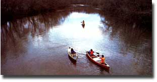

"A vagrant current or a slight rise in the river had carried off their raft, but this only gratified then since its going was something
like burning the bridge between them and civilization."
(Mark Twain, The Adventures of Tom Sawyer)
Like many other MOTHER-readers, my wife, Leslie, and I dreamed of one day cashing in our urban ways for a healthier, outdoor, self-reliant lifestyle. About five years ago, we finally quit our nine-to-fives and left town for the country. Aware that such an abrupt transition might be pretty tough for us born-and-bred-in-the-city folk, we took a job managing a campground near the banks of the Peace River in Florida. This work was OK for a while; at least we got to be outdoors. But it soon started to bother us that we were not working for ourselves. What self-employment enterprise could we find?
We looked around and realized that the answer was practically on our doorstep: Right next to the campground was an intriguing owner-operated business called Canoe Outpost. Run by a couple about our age, Canoe Outpost was a boat livery, which rented canoes and other basic paddling equipment. And judging from the number of satisfied customers driving in and out every day, it seemed to be doing very well indeed! It gradually began to dawn on us that while we were busy supplying tourists with city conveniences-electricity, hot water, a clean swimming pool-our neighbors were providing their cus tomers with the chance to get away from urban ways and lose themselves in the peacefulness of nature. Suddenly, taking care of someone else's campground seemed infinitely less rewarding than running our own canoe livery.
ACTION!
One evening after a particularly busy weekend at the livery, Leslie and I wandered over to pay our neighbors a long-overdue visit. We got to talking and discovered that our new friends were doing so well in the canoe rental business that they were on the verge of franchising. And they just happened to know of some property for sale on the Withlacoochee River, in case we might be interested.
You bet we were!
Within two months we'd borrowed money from relatives for a down payment on the land ... put all our savings into a used van, a canoe trailer, 16 canoes, and some camping gear ... and finished setting up an outdoor enterprise for ourselves. We called our rental offshoot the Withlacoochee River Canoe Outpost. And today, three years later, business is booming. About the only thing we regret is that we didn't dive into this line of work sooner!
Perhaps you, too, are on the lookout for a getaway home-business opportunity, and live (or would like to live) near a navigable river. Well, here are a few pointers, which we've picked up the hard way, for you to mull over before you take the plunge.
TO LIVERY OR TO OUTFIT?
First of all, it's important to realize that there are differences between a canoe livery and a canoe outfitter. In general, a livery is a small operation that offers the bare essentials: a few canoes, paddles, and life jackets ... transportation to and from the river ... and a minimal amount of paddling instruction. On the other hand, an outfitter is usually a much bigger enterprise, boasting not only a large fleet of rental craft (rafts and kayaks included) but also camping gear and supplies, detailed maps of the waterways, guided tours, and intensive instruction. Outfitters tend to service folks who are into long excursions-in areas such as the Boundary Waters Canoe Area along the Minnesota-Canada border-or tough white water.
Dabbling in outfitting might be tempting, but in the beginning you'd better start a small livery with maybe 6 to 12 canoes. Then later, once you've made a success of this business, you can expand into outfitting, if you like. Besides, by starting small you probably won't have too much trouble unloading most of your equipment if you don't do well.
ROUGH WATERS
The actual day-to-day running of a canoe livery is pretty straightforward (and something I'll get into shortly); it's setting up shop that's the tough part. Your first and most difficult problem is to find a good location for your business, on or near a waterway that is [1] navigable (no rougher than a moderate Class 11 according to the International Rating System for grading river difficulty) ... [2] aesthetically pleasing . . . [3] blessed with a sufficient number of public access points ... and [4] fairly close to a major urban area. Keep in mind that this last point could be the one that ultimately determines your rate of growth.
Another thing to think about before acquiring a place for your livery is whether the property is zoned for commercial use. If not, getting it rezoned generally isn't too difficult: Most counties welcome the type of family-recreation business you want to operate. Simply check with the local planning and zoning board for details. If you're purchasing property in need of rezoning, be sure that you make the sale contingent upon this.
[EDITOR'S NOTE. The acreage your business is on isn't the only land you'll have to think about. If the river you plan to use runs through private property, it's a very good idea to try to make friends with the landowners. Many locals don't take kindly to folks' beaching and picnicking on their property without permission!]
MONEY TALK
Once your location is squared away, you can worry about buying equipment. Be forewarned: Equipment for a canoe livery requires a substantial investment on your part. As a rule, purchase the finest equipment you can afford. Good, solid gear will last longer and provide you with the best liability protection.
Sources
Aluminum Canoes
Alumacraft Boat Company
315 W. St. Julien St.
St. Peter, MN 56082
Grumman Boats
P.O. Box 428
Marathon, NY 13803
Michi-Craft Corporation
P.O. Box 1138
20,000 Nineteen Mile Rd.
Big Rapids, MI 49307
ABS Canoes
Blue Hole Canoe Company
P.O. Box 179
Sunbright, TN 37872
Mad River Canoe, Inc.
P.O. Box 610
Waitsfield, VT 05673
I suggest that you try to buy all your equipment from the busiest retail outdoor center in the nearest city. (You won't be purchasing enough merchandise to warrant wholesale prices from manufacturers.) The retailer might give you a slight discount, but more important, he or she will probably refer a lot of business in your direction, which in the long run will more than pay for the initial cost of equipment.
Your major outlay will be for canoes, which can cost from $300 up, depending on material and make. Of the various types of canoes on the market, aluminum ones are generally considered the best for rental purposes. They're quite durable (though "dentable"), maneuverable in most grades of water, and easy to care for. Grumman Boats (see the access list for the company's address) is about the largest and best manufacturer of aluminum craft. Its standard 17-footer (a good length for two passengers) retails for around $450.
If price isn't a problem, and if you're dealing primarily with white water, you might want to think about ABS (acrylonitrile butadiene styrene) canoes. These sleek, extremely tough cruisers, which retail at around $700, are excellent at finessing rapids and are some of the finest canoes on the market.
Next on your shopping list are paddles and life jackets. Don't buy wooden paddles: They feel good in the hand of an expert, but in the grip of a beginner they are apt to splinter away very quickly. So invest in long-lasting aluminum, rubber, or plastic paddles. And don't buy kapok-filled life jackets. While kapok's inexpensive, it's also dangerous: If a jacket gets punctured, it'll sink! There are better (and, unfortunately, more costly) jackets available for around $40 each. A good one could save a life or a lawsuit!
VEHICLES
Part of your job as a livery operator is to get folks to the river. A used van or bus will suffice for this service. Don't use a truck: Not only is it dangerous to haul people in the back of a pickup, but in many states it's also illegal. You can usually purchase a used van, one that is in good condition and that has been driven only about 20,000 miles, from a carleasing company.
If you're going to be transporting people, you're going to be hauling canoes as well. I suggest that for this job you find a good new or used manufactured canoe trailer (a secondhand Iron Mountain ten-rack model is about the best around). Of course, you can always build your own boat toter, but don't underestimate the stresses it will be subjected to. One busy Saturday morning, the tongue of my homemade trailer came off and dumped a rack full of canoes smack-dab in the middle of a railroad crossing!
PAPERWORK
At one time, on-water liability insurance was a rare and costly commodity, but nowadays (thanks in part to the tremendous surge of interest in river riding) it's a lot easier and less expensive to obtain. The best place to get such protection is through the National Association of Canoe Liveries and Outfitters, in Chicago. This association offers low rates for on-water protection, plus group health insurance, a directory of more than 100,000 liveries and outfitters across the country, and other benefits as well. Send an SASE with your queries to NACLO (see list of sources for address).
To further protect yourself from unforeseen mishaps down the road, you're going to need a good, clear customer sign-up form, preferably one that's been prepared by a lawyer. (If you don't have a legal friend willing to help you out, why not barter a canoe trip for such advice?) This form should be a contract between you and your customer that states the responsibilities of both parties. For example, you agree to provide equipment in good working order, and your client is responsible for returning the equipment to you in pretty much the same shape, less normal wear and tear. The form should declare that customers are responsible for any injuries they sustain or personal property they lose. [EDITOR'S NOTE: Also, you might want to prohibit alcoholic beverages (warn folks of the dangers of PUI, or paddling under the influence), fishing without a license, littering, and picnicking at unspecified locations.]
DAY BY DAY
Once you get your livery set up, don't forget to advertise so folks know you exist! And don't be discouraged if customers don't flock to you right away: It takes time for the word to get around.
When the customers arrive, your daily operations begin. Here's an example of a basic business transaction: A couple drives up, ready for a paddling excursion. You quickly size them up to determine their experience, ability, and physical condition (your skill at performing this important job will improve with practice). Taking into account their level of proficiency and the river and weather conditions, you suggest a route that will provide them with the best possible trip. You fit them out with equipment and shuttle them upriver to the planned put-in spot. With a few last minute instructions ("Be sure to notice the osprey nest in the cypress tree just past the old railroad trestle!"), you send them off and return to headquarters to take care of other Customers.
The twosome you loosed upon the river are free to spend the rest of the day leisurely paddling downstream, taking in the beauty of their natural surroundings. Several hours later they'll float lazily into your livery or take-out place (you'll be there to help them dock), eager-you hope!-to return to town and spread the word to their friends about your terrific operation. At the end of the day, you'll clean up your canoes and paddles ... perform any necessary repairs ... bed everything down for the night ... and amble on home for supper.
Running your own canoe livery isn't going to make you a millionaire overnight. In most areas of the country, it won't even provide you with year-round employment. But this sort of work can provide you with an independent, self-supporting, outdoor lifestyle. You can work alongside your family near a beautiful waterway, and you can give (well, rent!) others not so fortunate as you a vehicle capable of transporting them far away from city woes and down streams of natural beauty. And that's not a bad life ... not bad at all!
|
 STAFF PHOTO |
|
|